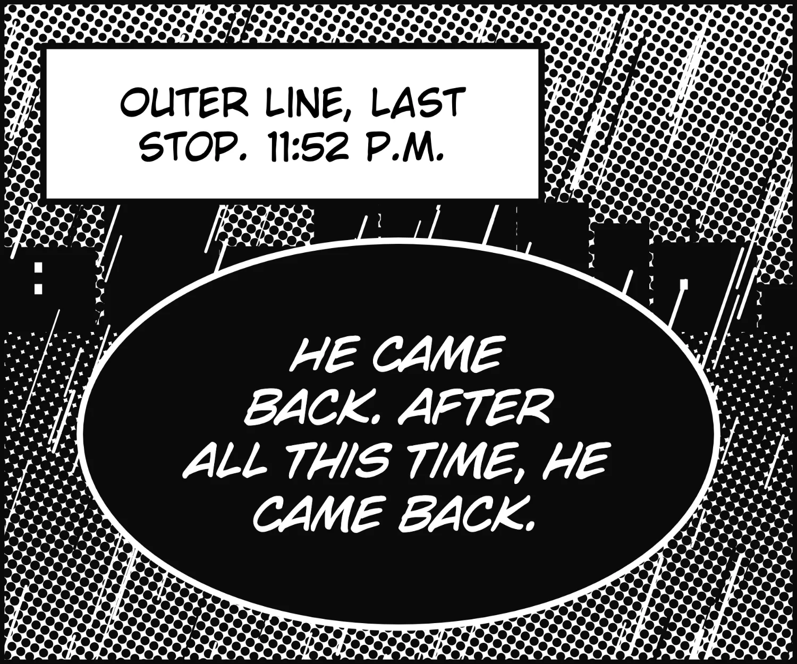
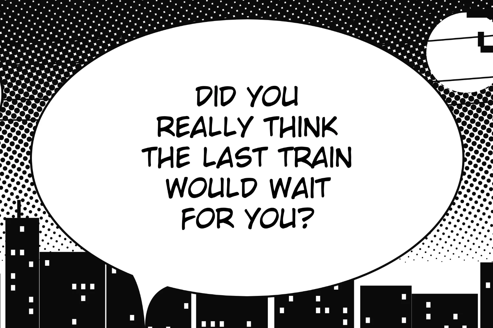
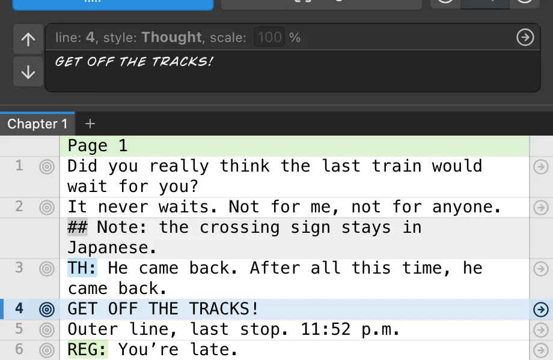
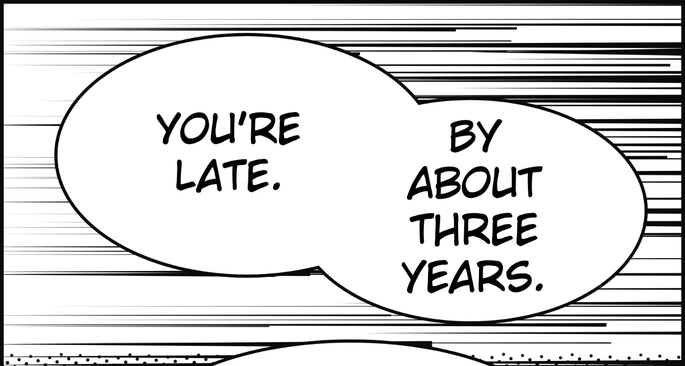
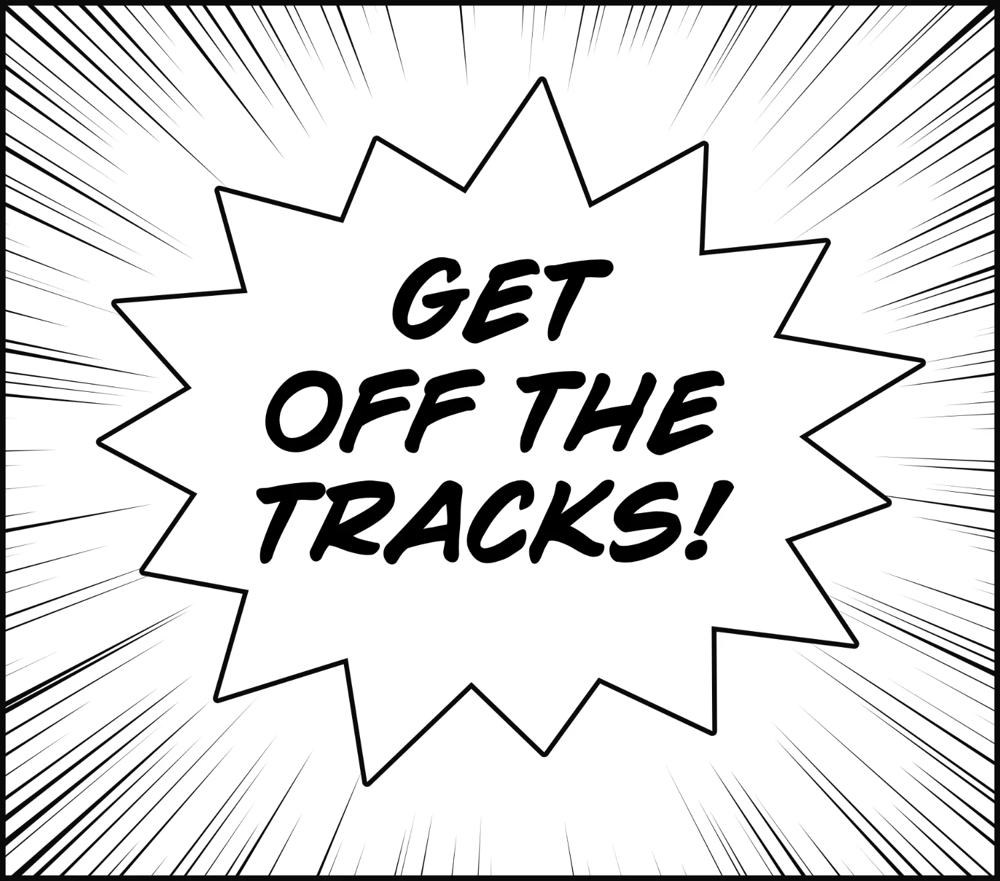
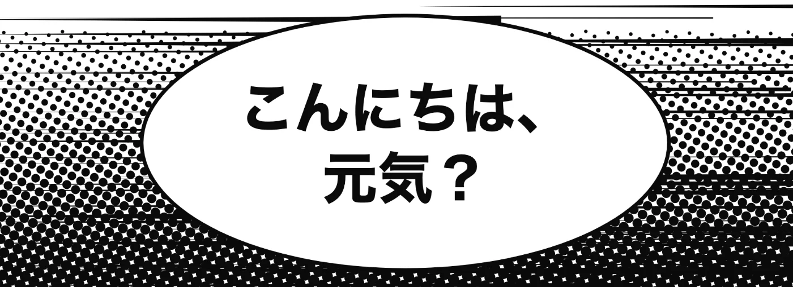
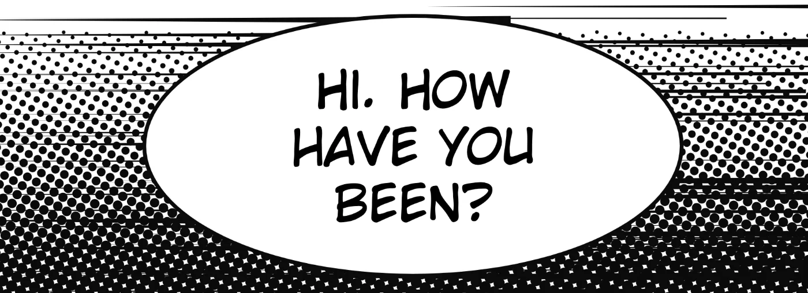
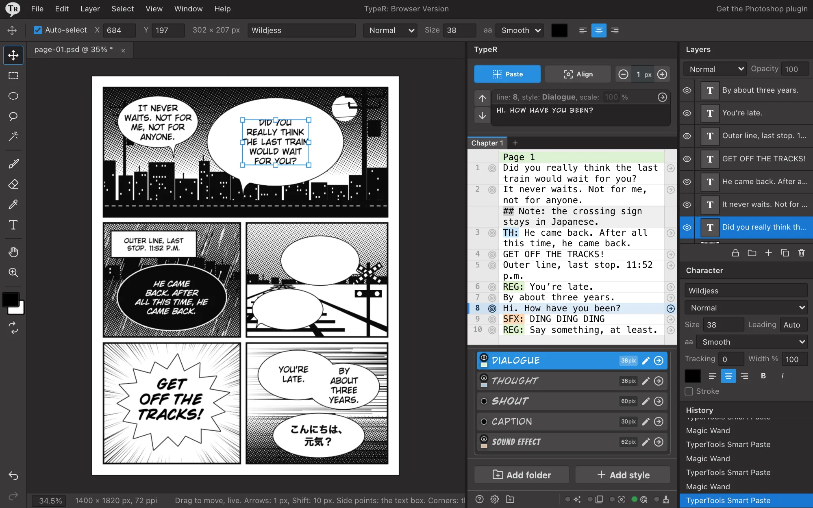

Black bubbles
White text, no stroke, no second style. TypeR reads the fill under your selection.

The free Photoshop plugin that fits each script line to its bubble. And now in your browser too.
Lines follow the bubble’s real outline. The style’s size holds when the text fits; when it doesn’t, TypeR gives up as little as it can, and a hyphen comes last.
See every kind of bubble

Select a bubble, paste, move on: a whole chapter, without leaving Photoshop.
Black, double, spiky, boxed, already lettered: the same click.
White text, no stroke, no second style. TypeR reads the fill under your selection.

Each chamber takes the next line. One undo takes them all back.

Mark a Shout and a Narration style once; spiky bubbles and rectangles pick them.

Paints the bubble on one TypeR Clean layer, under your text. On solid white or black.


TypeR's real panel and engine in a Photoshop-like workspace. Nothing to install, and your files never leave your computer.
Open the web version
Open and save PSDs. Layers, groups, masks and text stay in the file.
Drag it and watch it move, or nudge it to the pixel with the arrow keys.
Rectangle, ellipse, lasso, wand. Add and subtract as in Photoshop.
Import the .zip exported from TypeR: your styles and fonts stay in the browser for next time.
Page markers open the matching PSD, PNG or JPEG as you advance.
REG:, SFX: or your own tags pick the style and leave the text.
Suggests line breaks, learns from your typesets, uses no generative AI.
Capture several bubbles, then fill them together.
Fonts previewed in their own face, size presets, refont rules.
Finds missing fonts and installs the family; turns finished PSDs into styles.
One profile per project. Share folders as JSON, or as a ZIP with their fonts.
Every action takes the key you want, and Settings warns about a clash.
From English and French to Vietnamese and Arabic, with right-to-left text.
| Version | Web version | New TypeR | Legacy |
|---|---|---|---|
| You need | A browser (Chrome or Edge work best) | Photoshop 2025 (26.0) and later | Photoshop CC 2015 (16.0) and later |
| To install | Nothing to install | Double-click the .ccx file | Extract the archive, run the installer |
| To open | typer.hayasaku.fr/web | Plugins › TypeR › TypeR | Window › Extensions › TypeR |
| Download | Open it | Get TypeR-UXP.ccx | Get TypeR.zip |
Legacy in one line, Windows PowerShell
irm https://typer.hayasaku.fr/install.ps1 | iexLegacy in one line, macOS Terminal
curl -fsSL https://typer.hayasaku.fr/install.sh | bashDoes the web version replace Photoshop? To typeset a chapter, mostly yes. It has no filters, and adjustment layers are kept but not shown.
It doesn’t show up? Extract the archive, close Photoshop, run the installer again. Legacy on a Mac, from that folder:
Will an update delete my styles? No. Installers keep them, and the new TypeR imports Legacy’s.
Does it use generative AI? No. It all runs on your computer.
Your next chapter, one click per bubble.